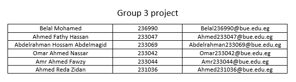

This Is Our Group's Info

About Our Project
Purpose
We are creating an online clothing. Customers can search for items
based on brand, type, price range, and quality. Additionally, they can
view photos and product specifications, features, and prices. This
allows customers to shop from the comfort of their own home and use
the search bar to find what they need.
Audience
The intended audience of this website is the adults, teens, and children
due to their variety of clothes and preferences that are demanded.
Opportunity
Our website have the opportunity to review every clothing product in
way that makes the client interested in buying these products , for
example reviewing all the product brands and giving pictures contains
alot of views of the product.
Content
Our website will include several product listings , categories for these
products , pricing information ,customer reviews , information about
the team behind the brand and the history of the clothing store ,
contact information , promotions &discounts and lastly social media
links .
Related Websites
H&M and namshi. We choose these sites. due to them being one of
most popular sites in the middle east for clothing. allowing user to shop
for different brands and style from the comfort of their home..
Forms
the forms that our web site can benefit from are for registering to the
site(signing up), logging in, adding an adress for shinping, and a form
for when an item is being bought buy the customer..